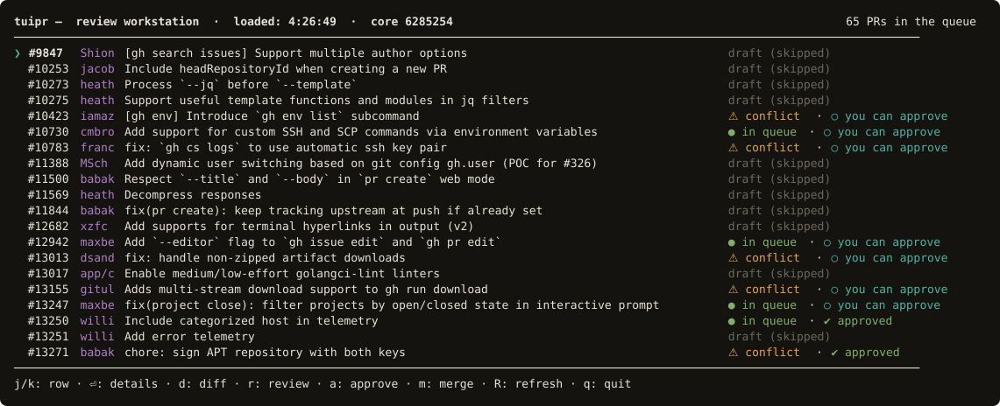

Terminal review workstation for agent-generated pull requests.
Work in progress — not yet released

Real output, not a mockup — the open pull requests of cli/cli, classified.
Coding agents open pull requests faster than anyone can read them. The
bottleneck stopped being how fast code gets written, or even how review
mechanics work — it is human attention, and the discipline to decide what
a review is worth spending.
tuipr puts a human gate in front of the merge, in the terminal, where the
rest of the work already happens.
What it does
Queue.Every open PR with its computed status — landable, conflicted,
blocked, draft — reconstructed from git and the GitHub API. Stacked PRs
render under the base whose fate decides theirs.
Review.Hand the terminal to a hunk-level diff viewer, comment inline, and
upload the findings as a single review rather than a scatter of
comments.
Budgeted AI review.Run a coding agent over the selected PR in the background under an
explicit spend cap. Findings arrive as notes inside the diff. Starting a
second run takes a deliberate keystroke — accidental double spend should
be hard, not merely regrettable.
Gates and attestation.Merges pass independent gates. Approvals write an attestation into
the GitHub audit trail, so the intent behind a merge outlives someone's
shell history.
Design principles
Fail closed. A silent success is a bug class, not a convenience.
Spend is a decision, never a side effect.
Provenance over convenience — what happened must be reconstructible
from the audit trail alone.